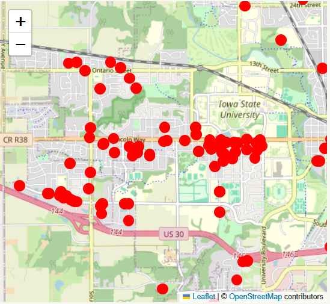
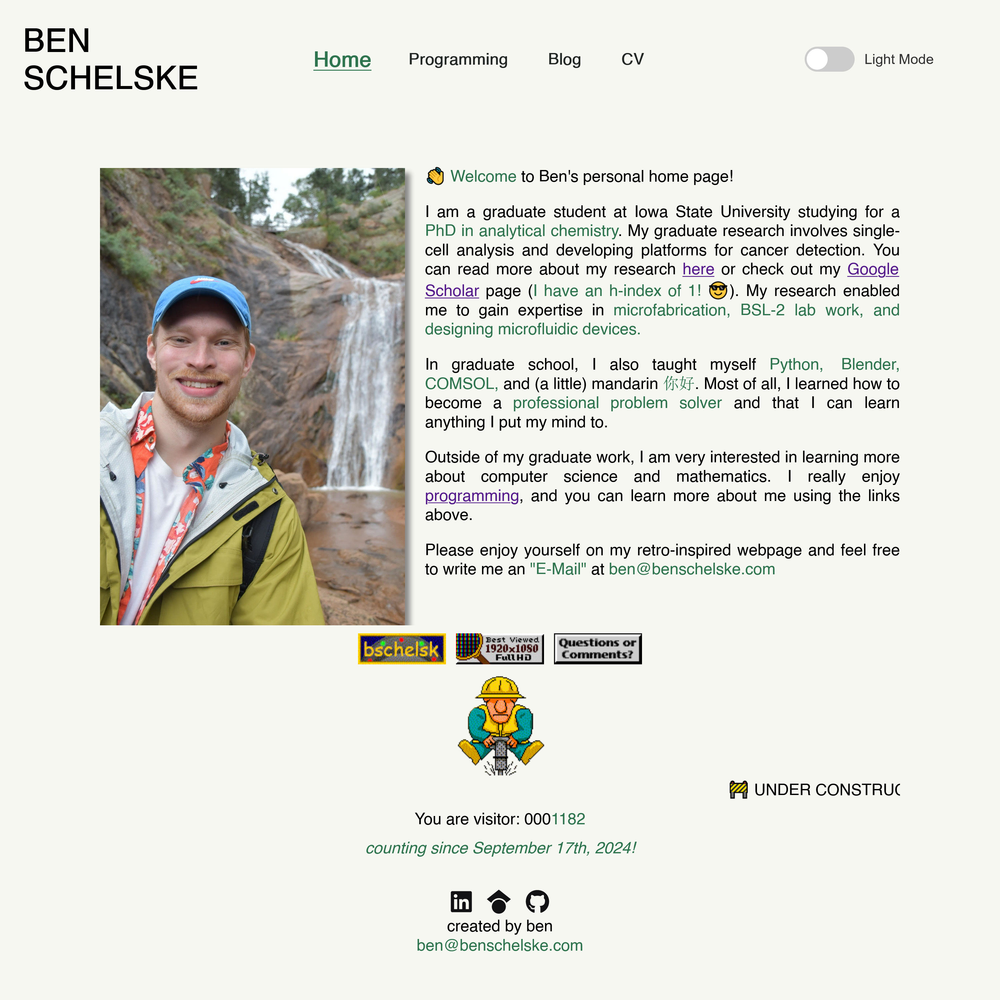
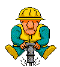
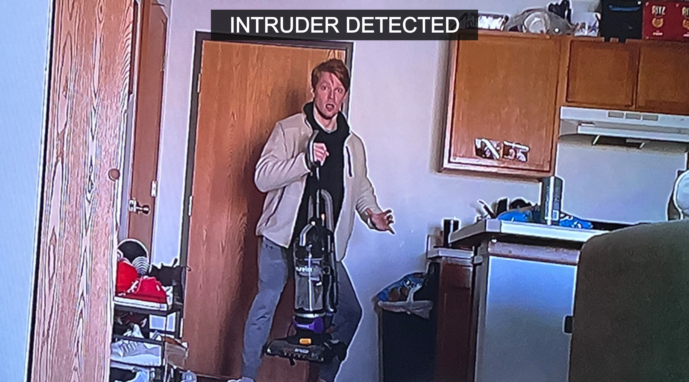

BEN
SCHELSKE

Light Mode

I used to live in the bad part of town, which I later learned was locally known as the Wild West. During my time in the west, I witnessed car break-ins, heard gunshots, and had my own home invaded. There was always something interesting happening just outside my window.
With this project, I want to visualize just how interesting the Wild West really is. The idea is to drop pins on a map according to the locations from local police reports. Maybe I would be able to see a huge crime hotspot in the west...?
HTTP requests, .pdf parsing, map visualization (folium)

HTML, CSS, SEO

Short-form content is a digital gold rush. I've automated production of TikToks using OpenCV and moviepy. Originally, I wanted to make videos that seem like they would be a part of an ARG campaign- but these videos performed extremely poorly. Since then, I've tried to optimize the videos to retain viewer impression, but this also ends poorly.
*People don't want to watch 'ai-generated' or code generated slop. In general, retention is bad and dislikes are high, but this has been a fun project! Lately I've been trying to incorporate Blender and DaVinci Resolve to make the videos more appealing.
MoviePy, PIL, OpenCV, Blender, video editing

Someone broke into my apar tment and moved my vacuum. I used a Raspberry Pi and IR motion sensor to send alerts to my phone to catch the next intruder in the act. I later 3D printed a case to hold the assembly together. I learned about working with APIs, software, and hardware.
Here, I've re-enacted the scene I was hoping to capture. Don't be fooled, the intruder is still at large.
No, the intruder didn't vacuum my floors.
Electronics, APIs (SMS), 3D Printing
Some of the first code I've ever wrote was in the ImageJ macro language using notepad. I was interested in improving the data analysis workflow for making measurements on fluorescence microscopy images. I wrote a series of macros that automatically place regions of interest (ROIs) over regions of interest, identify the presence of cancer cells, and made data collection easier. ImageJ is awesome!
See the code on GitHubImageJ Macro Language, image analysis/processing
Starbattles are a fun logic puzzle. The objective is to fill a grid of shapes with stars, with a few simple limitations for how stars can be placed. I like solving these puzzles (I'm ranked in the top 2% of puzzlers), so naturally (ambitiously/naively), I thought I'd try to get a computer to solve them for me. This is the first project I've ever attempted.
For some reason I used python's turtle graphics to create a game board that I could interact with. I can encode different boards and display them using the turtle graphics. I never got around to the solving heuristics, but having a program solve these puzzles is something I think about constantly. I'm very tempted to try and use Rust for this problem.
Python